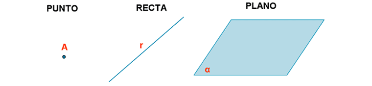
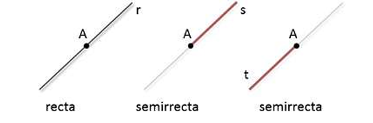
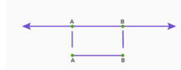
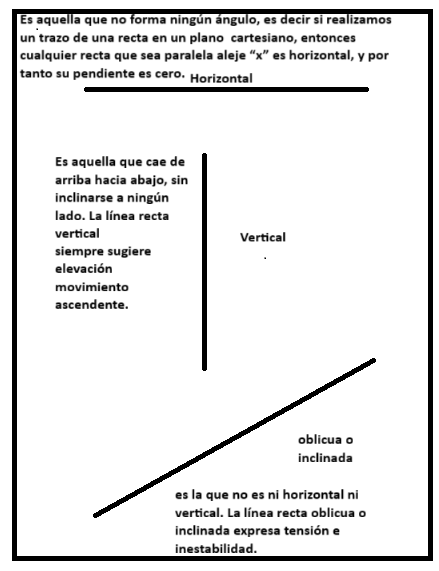

ELEMENTOS BASICOS DE LA GEOMETRÍA
Como palabra tiene dos raíces griegas: GEO = tierra y metrón = medida; o sea, significa "medida de la
tierra".

• Punto: Figura geométrica que no tiene dimensiones y se usa para indicar una posición en el
espacio.
• Línea: Extensión considerada solo en su longitud.
• Plano: en geometría, es el ente ideal que sólo posee dos dimensiones, y contiene infinitos puntos y rectas; es uno de los entes geométricos fundamentales junto con el punto y la recta. Solamente puede ser definido o descrito en relación a otros elementos geométricos similares. Se suele describir apoyándose en los postulados característicos, que determinan las relaciones entre los entes geométricos fundamentales. Un plano queda definido por los
siguientes elementos geométricos:
• Recta: Es una sucesión infinita de puntos que tienen la misma dirección. Una recta tiene una dimensión: longitud.
Se designan mediante dos de sus puntos o mediante una letra minúscula.
Dos puntos determinan una recta.
las rectas pueden ser verticales, horizontales, oblicuas, perpendiculares.
Semirrecta: Una Semirrecta es cada una de las dos partes en las que se divide una Recta al ser cortada en alguno de sus puntos.

Segmento de recta: el segmento es un fragmento de la recta que está comprendido entre dos puntos, llamados puntos extremos o finales. Así, dado dos puntos A y B, se llama segmento AB a la intersección de la semirrecta de origen A que contiene al punto B con la semirrecta de origen B que contiene al punto A.

Posición de las líneas rectas:
